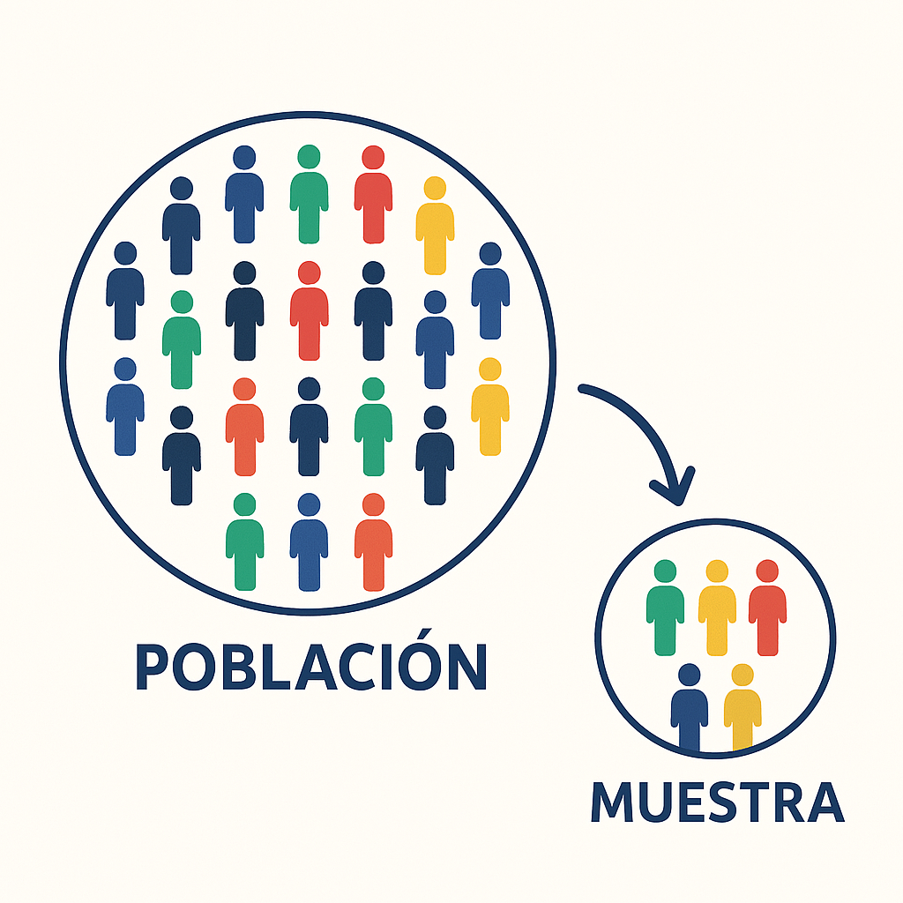
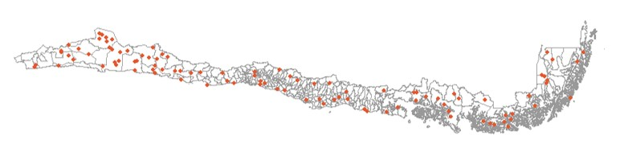

Muestreo y Encuestas Complejas en R
Sesión 4: Fundamentos y la Necesidad de Diseños Complejos
2025-03-31
Objetivos de la Sesión
En esta primera sesión, nos enfocaremos en:
- Comprender por qué el muestreo es una herramienta esencial en la investigación sociológica.
- Identificar las limitaciones prácticas del Muestreo Aleatorio Simple (MAS) en contextos reales.
- Introducir los conceptos clave detrás de los diseños muestrales complejos:
- Estratificación
- Conglomerados
- Ponderadores (factores de expansión)
- Justificar la necesidad de usar software especializado (como R) para analizar datos de encuestas complejas.
El Desafío: Conocer lo Social
En sociología, queremos entender fenómenos que afectan a grandes poblaciones:
- Niveles de pobreza en Chile.
- Opinión pública sobre una nueva ley.
- Condiciones laborales de los jóvenes.
- Acceso a la salud de migrantes.
Pregunta clave: ¿Cómo podemos decir algo válido sobre toda la población (ej. todos los chilenos) si solo podemos estudiar a una parte de ella?

La Solución: Muestreo e Inferencia
- Muestreo: El proceso de seleccionar un subconjunto (la muestra) de una población más grande (el universo).
- Inferencia Estadística: El proceso de usar la información de la muestra para sacar conclusiones (inferir) sobre toda la población.
Idea Central: Si seleccionamos la muestra de forma adecuada (probabilística), podemos generalizar los resultados observados en la muestra a la población completa, cuantificando la incertidumbre de esa generalización (error muestral).
Esto es crucial para la validez externa de nuestras investigaciones.
El Punto de Partida Ideal: Muestreo Aleatorio Simple (MAS)
Imaginemos una tómbola gigante con el nombre de cada persona de nuestra población de interés.
MAS: Cada persona tiene exactamente la misma probabilidad de ser seleccionada para la muestra.
MAS: Ventajas Teóricas
El MAS es la base de gran parte de la estadística inferencial que aprendemos inicialmente:
- Fórmulas “simples” para calcular:
- Medias poblacionales (μ) a partir de medias muestrales (x̄).
- Proporciones poblacionales (P) a partir de proporciones muestrales (p̂).
- Errores estándar (SE), que miden la variabilidad de nuestras estimaciones.
- Intervalos de Confianza (IC), que nos dan un rango plausible para el valor poblacional.
- Pruebas de hipótesis (test t, chi-cuadrado, etc.).
- Intuición: Si todos tienen la misma chance de ser elegidos, la muestra “en promedio” debería parecerse a la población.
Pero… ¿funciona así en la práctica?
La Realidad Golpea: ¿Por Qué el MAS Falla a Menudo?
Aunque conceptualmente simple, el MAS enfrenta grandes desafíos en la investigación social del mundo real.
Veamos tres problemas principales.
Problema 1: Marcos Muestrales Incompletos
El MAS requiere una lista completa y actualizada de todos los individuos de la población objetivo (el marco muestral).
Preguntas:
- ¿Existe una lista con todos los habitantes de Chile y su información de contacto actualizada? No. (El Censo se acerca, pero no es una lista de contacto directa y se desactualiza).
- ¿Tenemos listas completas de poblaciones específicas como “jóvenes”, “trabajadores informales”, “migrantes recientes”? Aún más difícil.
Consecuencia: Si nuestro marco muestral no cubre a toda la población, la muestra seleccionada (incluso si es aleatoria dentro del marco) no será representativa de la población completa. Esto se llama error de cobertura.
(Ejemplo: Una encuesta telefónica basada en teléfonos fijos hoy excluiría sistemáticamente a quienes solo usan celular).
Problema 2: Costos y Logística
Imaginemos seleccionar 1000 personas al azar en todo Chile usando MAS.
Desafíos:
- Dispersión Geográfica: Los seleccionados estarían repartidos por todo el país, desde Arica hasta Punta Arenas, en zonas urbanas y rurales remotas.
- Costos Elevados: Visitar (o incluso contactar eficazmente) a cada persona seleccionada sería extremadamente caro en tiempo y recursos (traslados, viáticos, personal).
- Factibilidad: En muchos casos, simplemente no es viable implementar un MAS puro a gran escala por razones presupuestarias y logísticas.

MAS puro implica una muestra muy dispersa geográficamente.
Problema 3: Representatividad de Subgrupos
Supongamos que queremos estudiar la situación de un grupo específico que es pequeño en la población total (ej. Aymaras en la Región Metropolitana, ~0.1% de la población).
- Con MAS, la probabilidad de incluir a miembros de este grupo en una muestra de tamaño moderado (ej. 1500 personas) es muy baja.
- Podríamos terminar con muy pocos casos (o ninguno) de este subgrupo, impidiendo realizar análisis significativos sobre ellos.
Consecuencia: El MAS no garantiza una representación adecuada de subgrupos pequeños pero importantes para nuestra investigación. Necesitamos estrategias para asegurarnos de incluirlos.
Adaptándonos: Estrategias de Muestreo Complejo
Frente a las limitaciones del MAS, los investigadores desarrollaron métodos más prácticos y eficientes para encuestas reales.
Idea Clave: Abandonamos la idea de que todos tengan la misma probabilidad de selección inicial, pero mantenemos el muestreo probabilístico (probabilidades conocidas y > 0) y usamos técnicas para corregir las desigualdades y la estructura del muestreo.
Principales Estrategias:
- Estratificación
- Muestreo por Conglomerados
- (Como consecuencia) Ponderación
Estrategia 1: Estratificación
- ¿Qué es? Dividir la población total en subgrupos homogéneos (estratos) antes de realizar el muestreo. Luego, se realiza un muestreo (a menudo MAS o sistemático) dentro de cada estrato.
- Ejemplos de Estratos Comunes:
- Geográficos: Regiones, Provincias, Comunas, Zona Urbana/Rural.
- Socioeconómicos: Nivel Socioeconómico (NSE), Nivel Educacional.
- Demográficos: Grupos de edad, Sexo.
Estrategia 1: Estratificación
- ¿Por qué estratificar?
- Asegurar Representatividad: Garantiza que todos los subgrupos definidos como estratos estén presentes en la muestra, incluso los pequeños (podemos sobrerrepresentarlos si es necesario).
- Mejorar Precisión: Si las unidades dentro de cada estrato son más parecidas entre sí (homogéneas) respecto a la variable de interés que las unidades de estratos diferentes, la estratificación reduce el error estándar de las estimaciones globales.
- Permite Análisis por Estrato: Facilita obtener estimaciones específicas para cada subgrupo definido como estrato.
Estratificación en CASEN
La Encuesta CASEN utiliza múltiples niveles de estratificación:
- Geográfica:
- Región
- Provincia
- Comuna
- Área (Urbana / Rural)
- Socioeconómica (dentro de Comuna-Área):
- Se agrupan las “manzanas” o “secciones censales” (que luego serán las UPMs) en Niveles Socioeconómicos (NSE) basados en datos del Censo (ej. Bajo, Medio, Alto).
Resultado: La muestra se selecciona dentro de cruces muy específicos, como “Comuna X, Área Urbana, NSE Alto”. Esto asegura representación territorial y socioeconómica.
Estrategia 2: Muestreo por Conglomerados
- ¿Qué es?
- Dividir la población en grupos (conglomerados), generalmente geográficos (ej. manzanas, sectores censales, edificios).
- Seleccionar una muestra aleatoria de conglomerados.
- Dentro de los conglomerados seleccionados, encuestar a todas las unidades (muestreo monoetápico por conglomerados) o seleccionar una muestra aleatoria de unidades (muestreo bietápico o polietápico).
Estrategia 2: Muestreo por Conglomerados
- Ejemplo Bi-etápico (Común en encuestas de hogares como CASEN):
- Etapa 1: Seleccionar Manzanas/Sectores (Unidades Primarias de Muestreo - UPM).
- Etapa 2: Dentro de las UPM seleccionadas, seleccionar Viviendas (Unidades Secundarias de Muestreo - USM).
- (Etapa 3 implícita): Dentro de las viviendas seleccionadas, encuestar a todos los hogares/personas.
- ¿Por qué usar conglomerados?
- ¡Reducción drástica de Costos y Logística!
- No se necesita un marco muestral de todas las viviendas del país, solo de los conglomerados (Etapa 1) y luego listas de viviendas solo en los conglomerados seleccionados (Etapa 2).
- Concentra geográficamente el trabajo de los encuestadores.
- ¡Reducción drástica de Costos y Logística!
Conglomerados: La Contrapartida - Efecto de Diseño
Si bien los conglomerados ahorran costos, tienen una consecuencia estadística:
- Intuición: Las personas que viven cerca (en la misma manzana, en el mismo edificio) tienden a parecerse más entre sí en ciertas características (ingresos, opiniones, estilos de vida) que personas elegidas completamente al azar en la ciudad.
- Consecuencia Estadística: Cada entrevista dentro de un conglomerado aporta “menos información nueva” que una entrevista seleccionada independientemente (MAS). La información es, en parte, redundante.
Conglomerados: La Contrapartida - Efecto de Diseño
- Efecto de Diseño (DEFF): Mide cuánto aumenta la varianza (y por ende, el error estándar) de una estimación debido al uso de conglomerados, comparado con un MAS del mismo tamaño.
DEFF = Varianza_DiseñoComplejo / Varianza_MAS- Un DEFF > 1 (típico en conglomerados) significa que nuestra estimación es menos precisa que si hubiéramos hecho un MAS con el mismo número de entrevistas. Necesitaríamos una muestra más grande para alcanzar la misma precisión que un MAS.
Conglomerados en CASEN
CASEN utiliza un diseño bietápico (dos etapas de selección):
- Etapa 1 (Selección de UPM): Dentro de cada estrato (Comuna-Área-NSE), se seleccionan Unidades Primarias de Muestreo (UPM). Estas UPMs son agrupaciones geográficas (similares a sectores censales o conjuntos de manzanas) construidas por el INE. Se seleccionan con probabilidad proporcional a su tamaño (número de viviendas).
- Etapa 2 (Selección de Viviendas): Dentro de cada UPM seleccionada, se actualiza el listado de viviendas (trabajo de terreno o gabinete) y se selecciona una muestra sistemática de viviendas.
Esto hace que la logística sea manejable, pero introduce un efecto de diseño que debemos considerar en el análisis.
Consecuencia Lógica: Probabilidades Desiguales
Cuando combinamos estratificación (donde podemos sobrerrepresentar estratos) y muestreo por conglomerados (especialmente si se seleccionan con probabilidad proporcional al tamaño y/o el número de unidades en la segunda etapa varía)…
…el resultado es que no todos los individuos o viviendas en la población tienen la misma probabilidad final de ser incluidos en la muestra.
¡Hemos roto el supuesto fundamental del MAS!
¿Cómo resolvemos esto para poder hacer inferencia válida?
La Solución: Ponderadores (Factores de Expansión)
- ¿Qué son? Un peso (ponderador o factor de expansión) asignado a cada unidad final de la muestra (ej. cada persona encuestada).
- ¿Qué representa? Indica a cuántas unidades de la población representa esa unidad específica de la muestra.
- Si una persona tiene un peso de 500, significa que representa a sí misma y a otras 499 personas de la población con características similares (según el diseño).
La Solución: Ponderadores (Factores de Expansión)
- ¿Cómo se calculan (básicamente)? Son (aproximadamente) la inversa de la probabilidad de selección de esa unidad.
- Si alguien tuvo una probabilidad de 1/500 de ser seleccionado, su peso base será 500.
- Si alguien tuvo una probabilidad de 1/200 (porque pertenecía a un estrato sobrerrepresentado), su peso base será 200.
- Propósito: Corregir las probabilidades desiguales de selección, permitiendo que las estimaciones muestrales (medias, totales, proporciones) reflejen correctamente a la población total.
Ponderadores: Ajustes Adicionales
Los ponderadores que encontramos en las bases de datos como CASEN suelen incluir ajustes más allá de la probabilidad de selección inicial:
- Ajuste por No Respuesta: Corrige el hecho de que no todas las unidades seleccionadas participan (algunas rechazan, no se encuentran, etc.). Se intenta dar más peso a los que sí respondieron para compensar a los que no, asumiendo que son similares (dentro de ciertos grupos).
- Ajuste por Post-Estratificación (Calibración): Ajusta los pesos para que las sumas ponderadas de la muestra coincidan con totales poblacionales conocidos de fuentes externas (ej. proyecciones de población del INE por Región-Sexo-Edad). Esto mejora la precisión y consistencia de las estimaciones.
¡Usa los Ponderadores!
Si trabajas con datos de una encuesta con diseño complejo (como CASEN):
NUNCA calcules estimaciones (medias, porcentajes, totales) simplemente promediando o contando los datos sin usar los factores de expansión (ponderadores).
Ignorar los ponderadores lleva a:
- Estimaciones SESGADAS: No representan a la población real, sino a la muestra tal como fue seleccionada (con sus sobrerrepresentaciones y subrepresentaciones).
- Conclusiones ERRÓNEAS sobre la población.
¡El ponderador es la llave para generalizar correctamente!
El Impacto en el Análisis: ¿Por Qué Software Especial?
Hemos visto que las muestras complejas (estratificadas, conglomeradas, con pesos) rompen los supuestos del MAS.
¿Qué implica esto para nuestros análisis estadísticos?
- Estimaciones Puntuales: Deben calcularse usando los ponderadores para evitar sesgos (ej. media ponderada, proporción ponderada).
- Estimaciones de Varianza (y Error Estándar, ICs): Las fórmulas “simples” (las que usa
mean(),sd(),lm(),t.test()por defecto en R base) son INCORRECTAS. Ignoran la estratificación, los conglomerados y los pesos.- Generalmente, subestiman el error estándar real (especialmente por los conglomerados).
El Impacto en el Análisis: ¿Por Qué Software Especial?
- Pruebas de Hipótesis y Modelos: P-valores, tests t, chi-cuadrado, coeficientes de regresión y sus errores estándar deben calcularse considerando el diseño muestral.
- Usar funciones estándar puede llevar a encontrar falsos positivos (declarar efectos o diferencias significativas que no lo son en la población).
La Necesidad de Herramientas Específicas
Para analizar correctamente datos de encuestas complejas, necesitamos software que pueda:
- Incorporar los Ponderadores en los cálculos de estimaciones puntuales.
- Utilizar la información de Estratos y Conglomerados para estimar correctamente las varianzas y errores estándar.
En el mundo R, los paquetes clave para esto son:
survey: El paquete fundamental y más completo, desarrollado por Thomas Lumley. Ofrece una amplia gama de funciones para describir el diseño y realizar análisis.srvyr: Una “envoltura” (wrapper) alrededor desurveyque utiliza la sintaxis familiar del tidyverse (dplyr), haciendo el análisis más intuitivo para quienes ya usangroup_by,summarise, etc.
El Rol de la Documentación de la Encuesta
Para poder usar survey o srvyr, necesitamos saber cómo se diseñó la muestra.
La documentación técnica de la encuesta (como el “Diseño Muestral Casen 2022” que les compartí) es FUNDAMENTAL. Nos dice:
- Cuál es la variable de ponderación (
expr,expc, etc.). - Cuál es la variable que identifica los estratos (
varstraten CASEN). - Cuál es la variable que identifica los conglomerados/UPM (
varuniten CASEN). - Otros detalles importantes (ej. si los IDs de UPM se repiten entre estratos -
nest=TRUE).
¡Siempre lee la documentación antes de analizar!
Próximos Pasos: ¡A Practicar!
En el bloque práctico de hoy:
- Cargaremos la base de datos CASEN 2022.
- Identificaremos las variables clave del diseño muestral (ponderador, estrato, conglomerado).
- Realizaremos un cálculo “ingenuo” (ignorando el diseño) para comparar.
- Declararemos el diseño muestral complejo a R usando
survey::svydesign(). - Haremos nuestro primer cálculo ponderado con
survey::svymean()y veremos la diferencia.